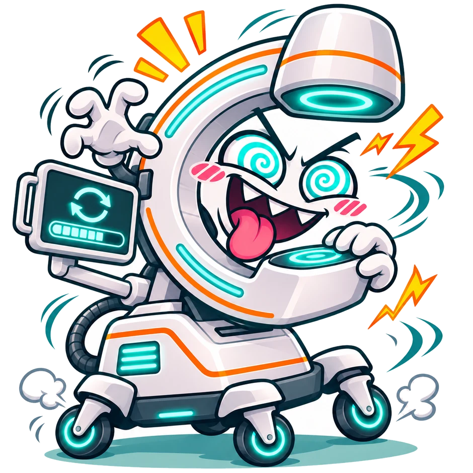
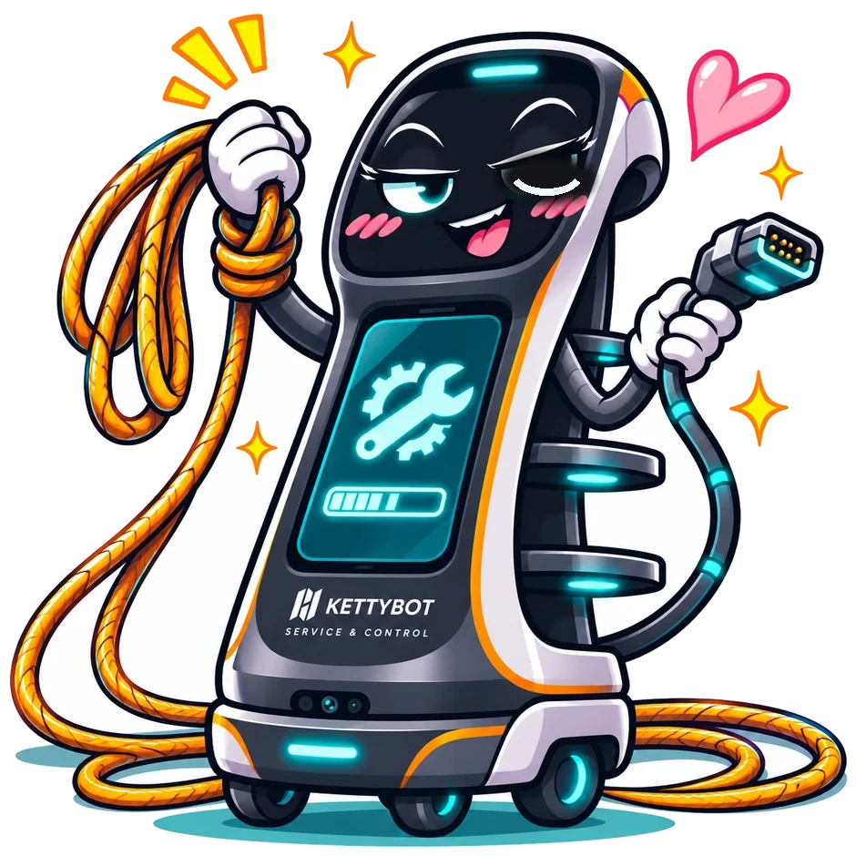

Lonely.
Parked in a hallway. No socket, no network.
C-ARMAGOTCHI
Now.
WEDNESDAY · ONE HOSPITAL · ONE NIGHT
When?
6 mobile C-arms · one surgical day · synthetic data
⚠ POLYTRAUMA INCOMINGthe trauma team keeps its C-arms
15:27IT ON CALL
AALOHAnow
Update Bogdan tonight, 22:20?
2 h · 94 % undisturbed · backup ready
Approve
Not tonight
✓ Approved · logged
KettyBot rolls.



BOGDAN · C-02
AALOHAIT ON CALL
Start the update on Bogdan?
Area clear · backup ready · rollback image kept
Start
✓ Started by IT on call · 22:20
Good morning.
Nobody noticed.
THAT’S INVISIBLE CONNECTIVITY
OR 2 · 07:30 · SPINAL FUSIONC-arm Bogdan✓ 4.2.1 · up to date · ready
22:20
Brain.
Agents propose, rules decide.
Emergency odds, hour by hour.
Re-plans in milliseconds.
Hands.
KettyBot — or a battery companion.
Power, network, the signed package.
No Wi-Fi in the OR.
Heart.
The C-ARMAGOTCHI makes people care.
Its mood sets the priority.
One tap, never a phone call.
A human starts every update.BUILT THIS WEEKEND · RULE CORE 15 TESTS · GOLDEN-WINDOW SCORER 12 TESTS · RUNNING LIVE IN THIS DECK
Every C-arm.
Every night.
ALOHA ROBOTICS
INVISIBLE CONNECTIVITY
Any technical questions?

HEALTHCARE HACKATHON BAVARIA · ERLANGEN 2026 · SIEMENS HEALTHINEERS CHALLENGE 04 · CONCEPT & SYNTHETIC DATA
Q&A · 1 / 3
How the golden window is chosen.
P(undisturbed) = P(no unplanned use) × e−λemergency·pull·Δt × (1 − P(previous case overruns))
golden window = argmax P over every legal window · ties → earlier
golden window = argmax P over every legal window · ties → earlier
1 · HARD RULES (CODE)
- never touches a case (20 min handover, 30 min rollback buffer)
- never a motion update remotely
- no guess on thin data
- a human on duty to confirm
- backup C-arm free · robot not double-booked
2 · PROBABILITY (MODEL)
- unplanned use per hour from device logs
- emergency arrival rate × share that would pull this C-arm
- overrun risk of the case before
- re-planned on every alarm, in milliseconds
3 · HUMANS (ALWAYS)
- the on-duty role approves the window
- IT / physics confirms the start remotely after “area clear”
- the OR nurse is never asked to decide
- every decision is logged
OPUS/v3/js/model/golden.js · 12 tests · built on the team rule core planner.js · 15 tests · all data synthetic
Q&A · 2 / 3
What is real today — and what we would test next.
BUILT THIS WEEKEND
- rule core
planner.js· 15 tests - golden-window scorer · 12 tests
- clickable platform prototype (planning board, device file, robot cockpit, guardian)
- the calendar swarm on stage runs the scorer live
ASSUMED · TO VALIDATE
- remote-start path (≈99 % of security patches are remote-capable, per Siemens)
- power draw during a 2 h install
- package hand-over by cable
- OR-plan feed without patient data
PILOT · ONE HOSPITAL
- one C-arm fleet, real logs, scheduler in shadow mode
- companion box first, KettyBot second
- measure: days to install, calls per update, dead-on-arrival rate, logs received
Concept demonstrator · not a Siemens Healthineers or PUDU product · no patient data · no medical device
Q&A · 3 / 3
The hands: KettyBot and the companion.
KETTYBOT (PUDU)
- 30 kg payload · LiDAR + vision SLAM
- 1.2 m/s · ~9 h battery · one floor today
- carries a medical-grade battery pack, Schuko + LAN cable
- reports “area clear” — never stores images
WHAT IT DOES
- drives to the parked C-arm, plugs power + network
- hands over the signed package, guards the install
- notices a device that doesn’t come back
- brings the logs home on every visit
WHAT IT NEVER DOES
- start an update (a human does)
- move a C-arm or enter an OR
- run motion / calibration updates
- stay in the way: on alarm it parks at the wall
Companion = the same job without wheels: a battery box beside the C-arm (the challenge owners’ favourite idea) for hospitals without a robot.
15:20:00
Aloha Robotics · pitch controls
→ Space PgDn next beat
← PgUp previous (settles instantly)
F fullscreen (also unlocks sound)
P open presenter view
N script overlay
T timer HUD
M mute sound effects
B blackout
A Q&A appendix
R restart to black
1–9 jump to scene
C pause / resume clock
The black screen is standby: press → to start the film. During the film, press → twice to skip it.